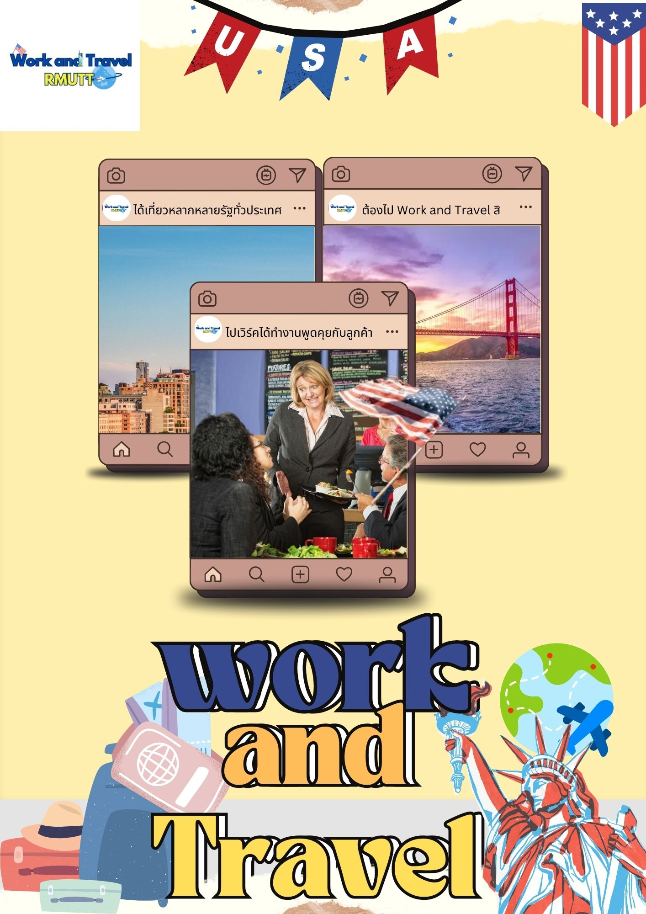

ยินดีต้อนรับสู่โครงการ Work and Travel
Work and Travel เป็นโครงการนักเรียนแลกเปลี่ยน
ที่ให้นักศึกษาได้ใช้เวลาในช่วงปิดเทอมใหญ่ได้ไปแลกเปลี่ยนวัฒนธรรม
ได้ทำงาน และท่องเที่ยวในประเทศสหรัฐอเมริกา ได้อย่างถูกต้องตามกฎหมาย

เป็นโครงการที่เปิดโอกาสให้นิสิตและนักศึกษาในระดับ มหาวิทยาลัยได้ใช้เวลาช่วงปิดภาคเรียนเดินทางไปแลกเปลี่ยนวัฒนธรรม ทำงาน และท่องเที่ยว ในประเทศสหรัฐอเมริกาอย่างถูกต้องตามกฎหมาย
ซึ่งเป็นโอกาสที่ผู้เข้าร่วมโครงการฯ จะได้ใช้ชีวิตในสังคมอเมริกันด้วยตนเอง ได้สัมผัสถึงความเป็นอยู่และวิถีชีวิตของการทำงานจริงในวัฒนธรรมอเมริกันและนานาชาติที่แตกต่างออกไป ทั้งยังได้มีโอกาสเข้าใจวิธีคิดของคนต่างชาติ
เรียนรู้ที่จะปรับตัว และฝึกแก้ปัญหาเฉพาะหน้าด้วยตนเอง และเมื่อสิ้นสุดโครงการฯ ผู้เข้าร่วมโครงการฯ ต้องเดินทางกลับประเทศของตนเพื่อศึกษาต่อในภาคเรียนถัดไป เพื่อนำประสบการณ์และทักษะต่าง ๆ ที่ได้รับระหว่างอยู่ในประเทศสหรัฐอเมริกาไปใช้ให้เกิดประโยชน์ต่อไป
วัตถุประสงค์โครงการ Work and Travel USA
ส่งเสริมและสนับสนุนให้นักศึกษานานาชาติที่ไม่ได้พำนักอยู่ในประเทศสหรัฐอเมริกามีโอกาสหาประสบการณ์การทำงานพิเศษในช่วงปิดภาคเรียน
ส่งเสริมให้นักศึกษาได้มีโอกาสเดินทางท่องเที่ยวในประเทศสหรัฐอเมริกาและได้รู้จักวางแผนการใช้จ่ายเงินอย่างเหมาะสม
ส่งเสริมให้นักศึกษาได้เรียนรู้วัฒนธรรมอเมริกันและวัฒนธรรมการทำงานในสังคมอเมริกัน ที่สามารถนำมาปรับใช้ให้เป็นประโยชน์กับการทำงานในอนาคต
ส่งเสริมให้นักศึกษาได้พัฒนาตนเองผ่านการดำเนินชีวิตในต่างแดน เรียนรู้ที่จะปรับตัวในสังคมที่มาจากวัฒนธรรมที่หลากหลาย ฝึกฝนความรับผิดชอบ และฝึกแก้ไขปัญหาต่าง ๆ ด้วยตนเอง
ส่งเสริมให้นักศึกษานำเวลาว่างในช่วงปิดภาคเรียนไปใช้ให้เกิดประโยชน์
ให้นักศึกษามีโอกาสฝึกฝนทักษะการใช้ภาษาอังกฤษ โดยเฉพาะทักษะการพูดและการฟังในสภาพแวดล้อมจริง ทั้งในสถานที่ทำงานและระหว่างเดินทางท่องเที่ยวในประเทศสหรัฐอเมริกา
ทำไมต้องไป Work and Travel USA?
โอกาส ในการทำงานช่วงปิดเทอมในสหรัฐอเมริกาอย่างถูกต้องตามกฎหมายโอกาส ท่องเที่ยวในสถานที่ต่าง ๆ ในสหรัฐอเมริกา เช่น นิวยอร์ก แคลิฟอร์เนีย ฟลอริด้า เทนเนสซี ฯลฯ
ได้เรียนรู้ แลกเปลี่ยนวัฒนธรรมกับชาวต่างชาติที่สหรัฐอเมริกา
ได้ฝึกภาษาในประเทศ Native Speakers เพื่อเพิ่มทักษะและประสบการณ์ก่อนเรียนจบ
ได้เพื่อนใหม่ทั้งชาวไทย และชาวต่างชาติ เช่น อเมริกา ตุรกี เวเนซุเอลา โดมินิกัน ฯลฯ